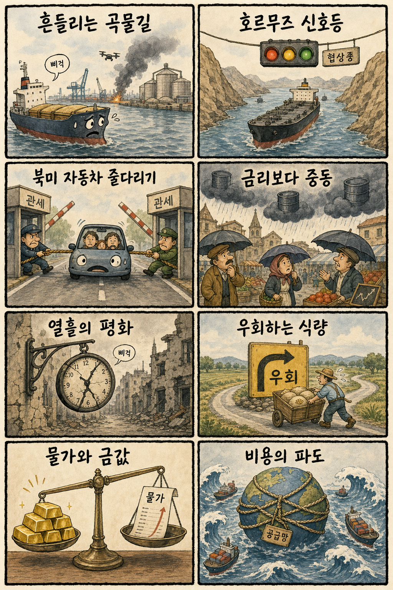
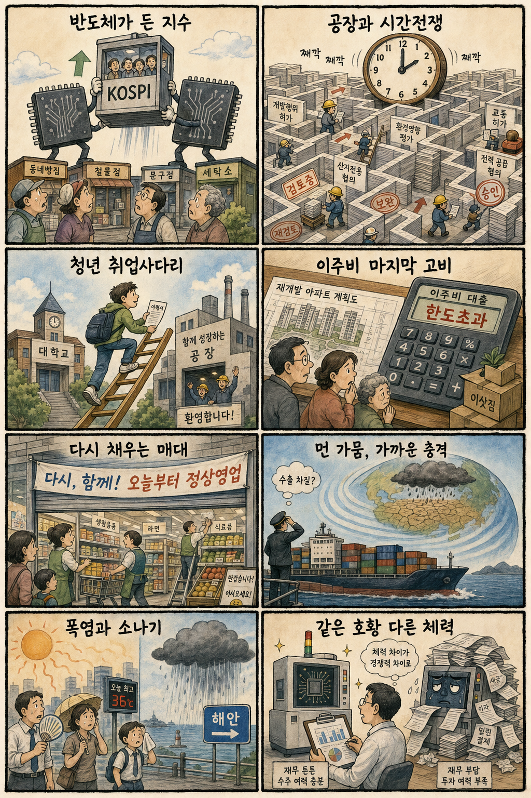

01
슈퍼마이크로컴퓨터 · 34.99→37.61달러 · +7.49%
내용요약 AI 서버 수요와 실적 전망 기대를 반영해 정규장 시가 대비 급등했습니다.
예상여파 국내 AI 서버·반도체 장비 심리에 우호적이지만 변동성이 큰 종목인 만큼 테마 추격은 경계해야 합니다.
MORNING_BRIEFING_20260813
작성 시각: 2026-08-13 06:39 KST · 직전 미국 정규장과 2026-08-13 KST 당일 공개 기사 기준
직전 미국 정규장인 8월 12일에는 다우 -0.04%, S&P 500 +0.26%, 나스닥 +0.54%로 혼조 속 기술주 중심 반등을 보였습니다. CPI 둔화 안도와 반도체 강세가 지수를 받쳤지만 메타·아마존 등 종목별 차별화는 컸습니다. 한국 증시는 전일 KOSPI 3.68% 급등과 삼성전자·SK하이닉스 동반 강세 뒤라 우호적인 미국 반도체 흐름보다 시초가 과열과 차익실현을 더 엄격히 봐야 합니다.
| 지수 | 종가 | 등락률 | 한국 증시 영향 |
|---|---|---|---|
| 다우존스 | 53,770.27 | -0.04% | 경기민감주 중립 |
| S&P 500 | 7,748.50 | +0.26% | 위험선호 소폭 개선 |
| 나스닥 종합 | 26,588.49 | +0.54% | 반도체 심리 우호 |
CPI 둔화 안도와 반도체 강세가 지수를 받쳤습니다.
삼성전자·SK하이닉스가 대형주 랠리를 이끌었습니다.
전일 급등 뒤 시초가 과열과 차익실현을 경계합니다.
확률·표본·손익비 문턱을 모두 통과한 후보가 없습니다.
8월 12일 보고서는 수급·컨센서스·보정 표본·손익비 문턱을 동시에 검증하지 못해 공식 추천을 내지 않았습니다. 실제 시가 기준으로 계산할 종목이 없으며 게시 당시 판단은 그대로 유지됩니다.
| 시장 | 종가 | 등락률 | 해석 |
|---|---|---|---|
| KOSPI | 6,579.04 | +3.68% | 대형 반도체 주도 급등 |
| KOSDAQ | 858.91 | +0.12% | 대형주 쏠림 속 보합 |
| 다우존스 | 53,770.27 | -0.04% | 경기민감주 혼조 |
| S&P 500 | 7,748.50 | +0.26% | 위험선호 소폭 개선 |
| 나스닥 | 26,588.49 | +0.54% | 반도체 중심 반등 |
삼성전자 +6.68%, SK하이닉스 +5.54%로 지수를 견인했습니다.
슈퍼마이크로컴퓨터가 시가 대비 7.49% 뛰었습니다.
메타와 아마존은 지수 상승에도 큰 폭의 상대약세였습니다.
KOSPI 급등 뒤 시초가 갭과 차익실현 위험이 커졌습니다.
내용요약 AI 서버 수요와 실적 전망 기대를 반영해 정규장 시가 대비 급등했습니다.
예상여파 국내 AI 서버·반도체 장비 심리에 우호적이지만 변동성이 큰 종목인 만큼 테마 추격은 경계해야 합니다.
내용요약 지수 상승에도 시가 대비 크게 밀리며 대형 플랫폼 내 뚜렷한 약세를 보였습니다.
예상여파 빅테크 전반 상승보다 종목별 실적·투자비 차별화가 커 국내 인터넷주에도 선별 압력이 이어질 수 있습니다.
내용요약 정규장에서 시가 대비 하락해 성장주 반등 흐름에 동참하지 못했습니다.
예상여파 전기차 수요와 가격 경쟁 우려가 국내 배터리·부품주의 단기 심리를 제한할 수 있습니다.
내용요약 소비·클라우드 대형주 가운데 시가 대비 뚜렷한 약세로 마감했습니다.
예상여파 미국 소비와 플랫폼 투자비 우려는 국내 성장주의 상승 탄력을 낮출 수 있습니다.
내용요약 CPI 둔화 안도와 반도체 강세 속 시가 대비 상승했습니다.
예상여파 국내 HBM 공급망 심리에는 긍정적이지만 전일 국내 대형 반도체 급등 뒤라 추격 손익비는 별도로 따져야 합니다.
나스닥 +0.54%와 엔비디아 상승은 반도체 심리에 우호적입니다. 그러나 국내에서는 8월 12일 KOSPI가 3.68%, 삼성전자가 6.68%, SK하이닉스가 5.54% 급등해 기대가 이미 가격에 빠르게 반영됐습니다. KOSDAQ은 0.12%에 그쳐 대형 반도체 쏠림도 뚜렷합니다. 첫 30분 시초가 갭, 외국인 현·선물 수급, 삼성전자 255,500원과 SK하이닉스 1,504,000원 부근의 매물 소화를 확인하기 전에는 추격을 피하는 편이 합리적입니다.
오늘은 추천 없음 — 현금 관망
전일까지의 외국인·기관 수급, 컨센서스 변화, 30건 이상 유사 조건 확률 보정, 예상 손익비 1.5 이상을 동시에 검증해 종합점수 75점·상승확률 60% 문턱을 넘긴 후보가 없습니다. 삼성전자의 전일 강세만으로 오늘 상승확률을 만들지 않으며 CPI와 시가 갭을 확인하기 전에는 임의 추천하지 않습니다.
관심 연결종목 메모리 반도체, 전력 인프라, 첨단 원전은 관찰 대상일 뿐 매수 추천이 아닙니다. 시초가 갭 상승 시 추격매수 금지입니다.
전일 급등한 반도체 대형주의 추격 과열을 확인합니다.
협상 교착이 비용 부담으로 번지는지 봅니다.
KOSPI 급등을 뒷받침한 수급의 연속성을 점검합니다.
대형주 쏠림 완화와 중소형주 확산 여부가 중요합니다.
핵심 요약: AI 투자 붐이 반도체·전력 수요와 물가를 동시에 밀어 올리는 가운데 HBM 공급 확대의 속도전이 이어지고 있습니다. 중국 AI 인재의 창업과 피지컬 AI 데이터 투자까지 생태계 확장은 계속되지만 생산 병목과 자본비용을 함께 봐야 합니다.
내용요약 AI 투자 확대가 반도체와 데이터센터 전력 수요를 끌어올리면서 미국의 비용·물가 압력을 높일 수 있다는 분석입니다.
예상여파 AI 설비투자 호조는 반도체·전력 인프라에 우호적이지만 금리 인하 기대를 늦춰 성장주 가치평가에는 부담이 될 수 있습니다.
내용요약 엔비디아가 AI 가속기의 메모리 사용 효율을 높이는 방향을 추진하며 삼성전자·SK하이닉스에 미칠 영향을 짚은 기사입니다.
예상여파 칩당 탑재량과 전체 출하량의 균형이 메모리 수요를 좌우하므로 공급사에는 물량·가격 협상력 확인이 중요합니다.
내용요약 알리바바의 전 Qwen 책임자가 세운 AI 스타트업이 텐센트의 투자를 받는다는 보도입니다.
예상여파 중국 대형 플랫폼 간 모델 인재·자본 경쟁이 독립 스타트업을 중심으로 재편되며 아시아 AI 생태계 투자가 늘 수 있습니다.
내용요약 네이버 D2SF가 피지컬 AI용 3차원 데이터 기술 스타트업 엔닷라이트에 세 번째 투자를 진행했다는 소식입니다.
예상여파 로봇·제조 AI의 학습데이터 제작 수요가 커지면서 3차원 설계·시뮬레이션 도구의 사업 기회가 확대될 수 있습니다.
내용요약 HBM 공급 부족에도 신규 공장 건설이 인허가와 기반시설 제약으로 늦어지는 문제를 다룬 기사입니다.
예상여파 생산능력 확장의 속도가 AI칩 공급망 경쟁력을 가를 수 있어 전력·용수·인허가의 병목 해소가 핵심입니다.
핵심 요약: 러시아 항구와 곡물 물류, 가자 공습 재개, 호르무즈 협상 교착이 식량·에너지 비용을 동시에 자극하고 있습니다. 북미 자동차 관세 협상과 유럽 증시의 중동 경계까지 공급망 불확실성이 시장의 금리 안도를 제한합니다.
내용요약 우크라이나가 러시아 항구를 타격해 곡물 터미널 가동이 중단됐다는 보도입니다.
예상여파 흑해 물류 차질이 길어지면 곡물 가격과 해상보험료가 올라 식품 물가의 변동성을 키울 수 있습니다.
내용요약 캐나다가 북미무역협정 요건을 지킨 차량의 낮은 관세율을 확보하기 위해 미국 자동차 관세 일부 수용을 검토한다는 보도입니다.
예상여파 협상 결과는 북미 자동차 생산기지와 부품 조달 비용에 영향을 주며 한국 완성차·부품사의 현지 전략에도 변수가 됩니다.
내용요약 유럽 증시가 미국 금리 우려 완화에도 중동 정세 불확실성 때문에 소폭 하락했다는 기사입니다.
예상여파 에너지 비용과 지정학 위험이 금리 기대 개선을 상쇄하면 유럽 경기민감주와 수출기업의 회복이 지연될 수 있습니다.
내용요약 이스라엘이 가자지구 공습을 재개하며 평화 중재안의 지속 가능성이 다시 흔들렸다는 보도입니다.
예상여파 교전 확대는 중동 외교와 인도적 상황을 악화시키고 유가·운송 위험 프리미엄을 높일 수 있습니다.
내용요약 호르무즈 해협을 둘러싼 협상이 교착된 가운데 국제유가가 보합권에서 소폭 상승했다는 기사입니다.
예상여파 원유 공급 차질 우려가 남아 있어 운송·항공·화학 업종의 비용 부담과 물가 경계를 이어갈 수 있습니다.

핵심 요약: HBM 장비 호황 속에서도 기업별 재무 체력이 엇갈리고, 반도체 공장 인허가와 정비사업 이주비가 투자·공급의 병목으로 부각됐습니다. 청년고용, 유통 정상화, 폭염과 소나기까지 실물경제의 체감 변수도 함께 점검해야 합니다.
내용요약 HBM용 TC본더 경쟁사들의 2분기 성과가 엇갈리며 한쪽은 수익성을 지키고 다른 쪽은 재무 부담을 드러냈다는 분석입니다.
예상여파 HBM 투자 확대 국면에서도 장비사는 수주뿐 아니라 마진·운전자본·재무건전성에 따라 주가 차별화가 커질 수 있습니다.
내용요약 정비사업이 사업성을 확보한 뒤에도 이주비 대출 규제가 착공 전 마지막 병목으로 작용한다는 기사입니다.
예상여파 금융 조달이 막히면 주택 공급 일정과 조합원 부담이 늘어 정책의 세부 기준이 건설·금융시장에 영향을 줄 수 있습니다.
내용요약 악화된 청년고용을 개선하려면 기업이 신규 채용을 늘릴 유인을 강화해야 한다는 사설입니다.
예상여파 채용 인센티브와 산업 수요가 맞물리지 않으면 단기 사업에 그칠 수 있어 양질의 민간 일자리 연결이 중요합니다.
내용요약 홈플러스가 67개 점포의 매대를 다시 채우고 정식 영업을 재개한다는 보도입니다.
예상여파 영업 정상화는 납품업체와 지역 고용에 긍정적이지만 소비자 회복과 현금흐름 개선의 지속 여부를 지켜봐야 합니다.
내용요약 전국 낮 기온이 최고 34도까지 오르는 가운데 동해안에는 비, 내륙에는 소나기가 예상된다는 예보입니다.
예상여파 전력 수요와 온열질환 위험이 이어지고 국지성 비로 출근·물류 일정에 불편이 생길 수 있습니다.
